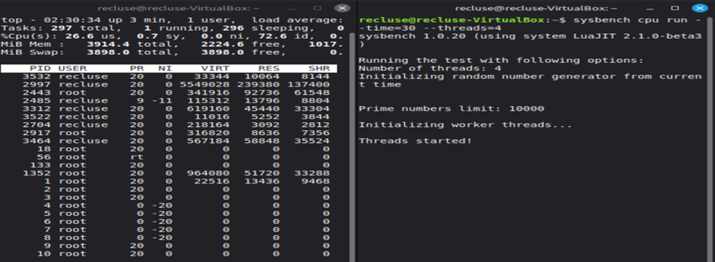
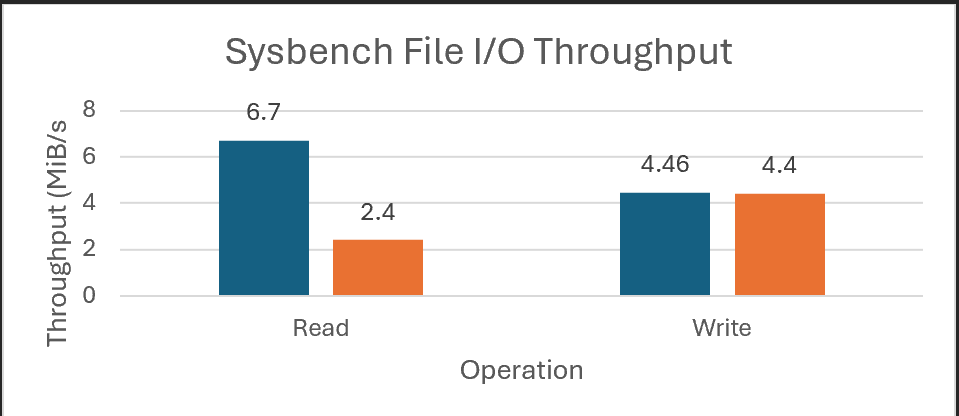
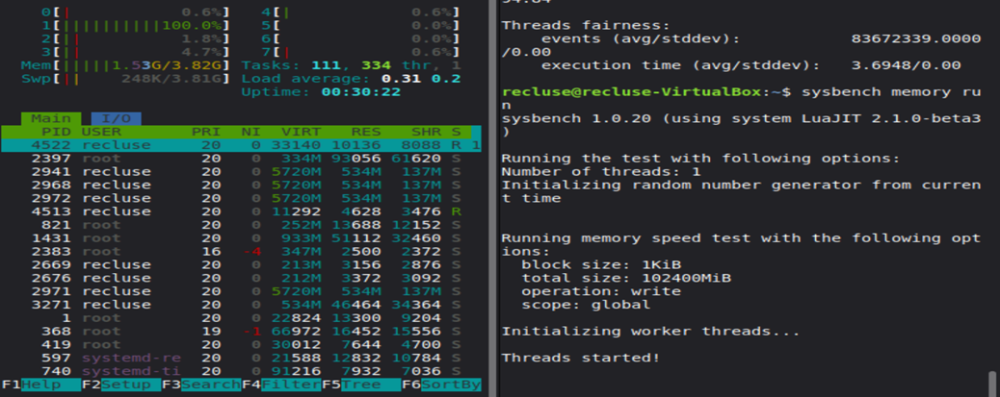
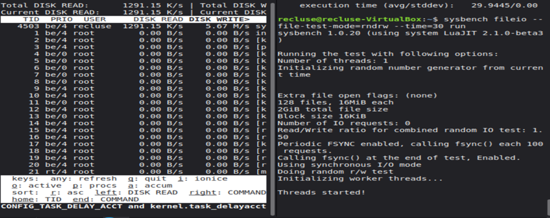
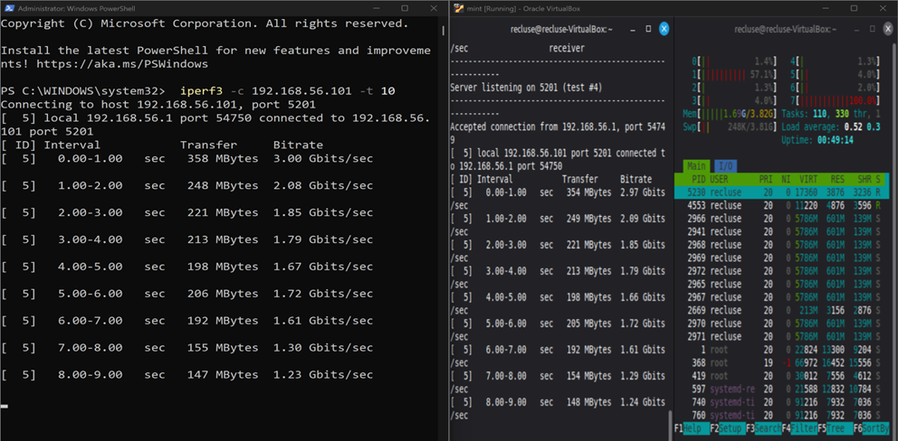
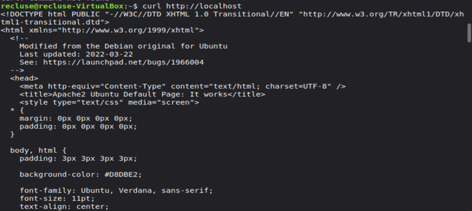
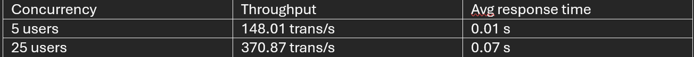
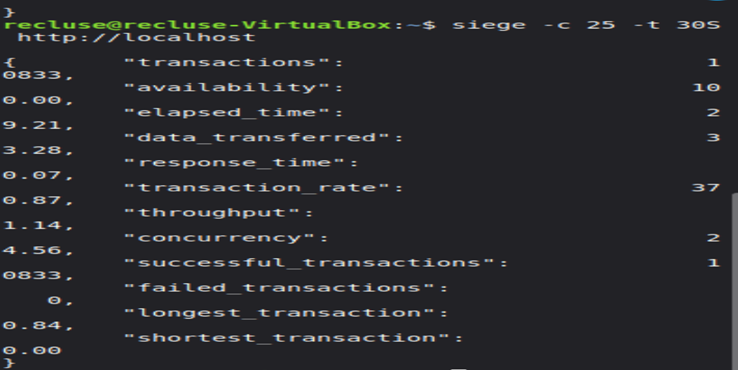
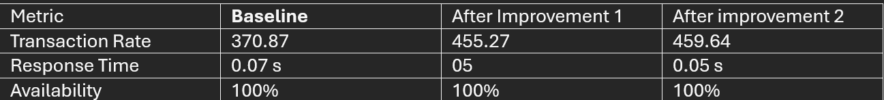

This week focused on measuring how the operating system behaves under different workload types
(CPU, memory, disk I/O, network, latency, and service response time). A baseline was captured first,
then each workload was tested and monitored, and finally two optimisations were implemented and
evidenced with quantitative improvements.
Objectives
Collect baseline metrics (idle/normal state) for comparison
Run workload-specific performance tests and observe OS behaviour
Record results in a structured performance table
Create charts/graphs to visualise key performance differences
Carry out network performance analysis (throughput + latency)
Implement and evidence at least two optimisations with measurable impact
1) Baseline monitoring (before stress testing)
Before applying load, I captured baseline system activity to establish a “normal” reference point.
This baseline is used to compare how CPU, memory, disk, and network behaviour changes under load.
The CPU workload was tested using sysbench cpu to generate predictable multi-threaded CPU load.
During this test, CPU utilisation increased significantly while RAM, disk, and network stayed stable, confirming
the workload was CPU-bound and demonstrating the OS scheduler handling concurrent threads.

Evidence W6-CPU: CPU stress / monitoring during sysbench CPU test.

Chart W6-C1: Sysbench CPU throughput (events/sec) visualisation.
Command:sysbench cpu --threads=4 --time=30 run
Key result: ~14098 events/sec
Average latency: ~0.28 ms
3) Memory performance test (stress-ng / sysbench memory)
Memory load was generated to observe how the OS manages allocation pressure, paging behaviour, and overall responsiveness.
Under memory stress, RAM usage increased rapidly and returned to normal after completion, showing stable resource handling.

Evidence W6-MEM: Memory load test and monitoring evidence.
4) Disk I/O performance test (sysbench fileio / dd)
Disk performance was tested using file I/O workloads. Disk activity became the dominant resource,
while CPU stayed relatively low (typical I/O-bound behaviour). This demonstrates how storage throughput
and filesystem sync behaviour can become bottlenecks, especially in a VM environment.

Evidence W6-DISK: Disk I/O workload execution and monitoring evidence.
Command (example):sysbench fileio --file-total-size=2G --file-test-mode=rndrw --time=30 run
Throughput testing was performed with iperf3 to measure bandwidth between the workstation and the VM.
Results showed stable transfer with moderate CPU usage and no packet loss, indicating the network path
was not a limiting factor for service tests.

Evidence W6-NET1: Network throughput test (iperf3).
Server (VM):iperf3 -s
Client (workstation):iperf3 -c <server-ip> -t 10
Key result: ~535 Mbits/sec receiver bitrate
5.2 Latency (ping)
Latency was measured using ICMP ping. Low average latency and 0% packet loss indicates a stable local VM network,
which supports consistent load-testing results.
Evidence W6-NET2: Latency test (ping).
Command:ping -c 20 <server-ip>
Results: Avg ~1 ms, Min 0 ms, Max 3 ms, Packet loss 0%
6) Service performance test (Apache + Siege)
Apache was used as the service workload, and Siege generated HTTP load at two concurrency levels (5 users vs 25 users).
As concurrency increased, Apache spawned additional workers and CPU activity rose; response time increased under heavier
load but availability remained stable with no failed requests.

Evidence W6-SVC1: Apache service status / validation (systemctl + curl).

Evidence W6-SVC2: Siege summary results (5 users vs 25 users).

Evidence W6-SVC3: Siege 25 concurrent users run output.
Confirm service:systemctl status apache2 and curl http://localhost
Low load:siege -c 5 -t 30S http://localhost
High load:siege -c 25 -t 30S http://localhost
Key results:
5 users: 148.01 trans/s, avg response time 0.01 s
25 users: 370.87 trans/s, avg response time 0.07 s
The table below consolidates the key measurements across all workloads and service tests.
This provides a single reference for comparison and later optimisation analysis.
Category
Tool
Metric(s)
Result
CPU
sysbench cpu
Events/sec, Avg latency
~14098 events/sec, ~0.28 ms
Memory
stress-ng / sysbench memory
RAM pressure behaviour
RAM usage increased under load; system remained responsive
Disk I/O
sysbench fileio / dd
Read/Write throughput
Read ~6.70 MiB/s, Write ~4.46 MiB/s
Network Throughput
iperf3
Receiver bitrate
~535 Mbits/sec
Network Latency
ping
Min/Avg/Max, Loss
Min 0 ms, Avg ~1 ms, Max 3 ms, Loss 0%
HTTP Service
siege
Transaction rate, Response time
5 users: 148.01 trans/s, 0.01 s
25 users: 370.87 trans/s, 0.07 s
Availability: 100%
8) Performance analysis (bottlenecks + OS behaviour)
CPU test: CPU became the dominant resource; other subsystems stayed stable, indicating a clean CPU-bound workload and effective scheduling.
Memory test: RAM usage increased rapidly under allocation pressure and returned after completion, demonstrating stable memory management under stress.
Disk test: Disk I/O dominated while CPU stayed low, showing an I/O-bound workload where throughput and sync behaviour can become limiting (especially in a VM).
Network tests: High throughput and low latency with 0% loss indicate a stable local network path and consistent conditions for service benchmarking.
Web service: Increasing concurrency raised CPU usage and response time, but the service remained stable (100% availability), showing Apache handled scaling within test limits.
I enabled Apache modules to improve efficiency and reduce overhead per request. This improved throughput and reduced response time
under the same 25-user Siege load.
Evidence W6-OPT1: Enabling modules + improved Siege result evidence.
Impact: Transaction rate increased from 370.87 → 455.27 trans/s (+22.8%)
Response time: improved from 0.07 s → 0.05 s
Improvement 2: KeepAliveTimeout tuning
KeepAlive was tuned to reduce wasted time holding idle connections. This produced a small additional throughput gain while maintaining
stability (0 failed requests).
Change: Set KeepAliveTimeout 2 in /etc/apache2/apache2.conf
Impact: Transaction rate increased from 455.27 → 459.64 trans/s
Availability: remained 100%

Chart W6-O1: Baseline vs Improvement 1 vs Improvement 2 (transaction rate).
Optimisation results summary
Metric
Baseline
After Improvement 1
After Improvement 2
Transaction Rate (25 users)
370.87 trans/s
455.27 trans/s
459.64 trans/s
Average Response Time
0.07 s
0.05 s
0.05 s
Availability
100%
100%
100%
10) Week 6 conclusion
Week 6 completed an end-to-end performance evaluation across CPU, memory, disk I/O, network throughput, latency, and HTTP service load.
Results showed predictable OS behaviour under each workload type, stable service availability at higher concurrency, and measurable
improvements after two optimisations (overall throughput improved by ~23% compared to baseline). This prepares the system for the Week 7
security audit and final evaluation.